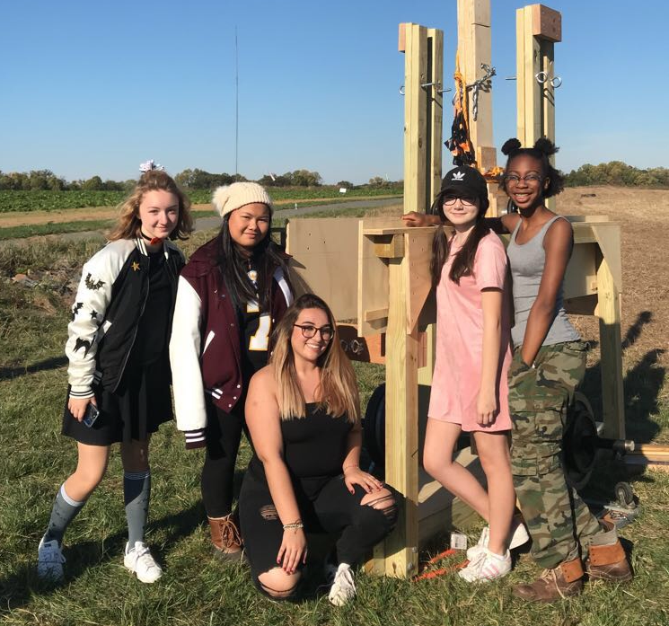
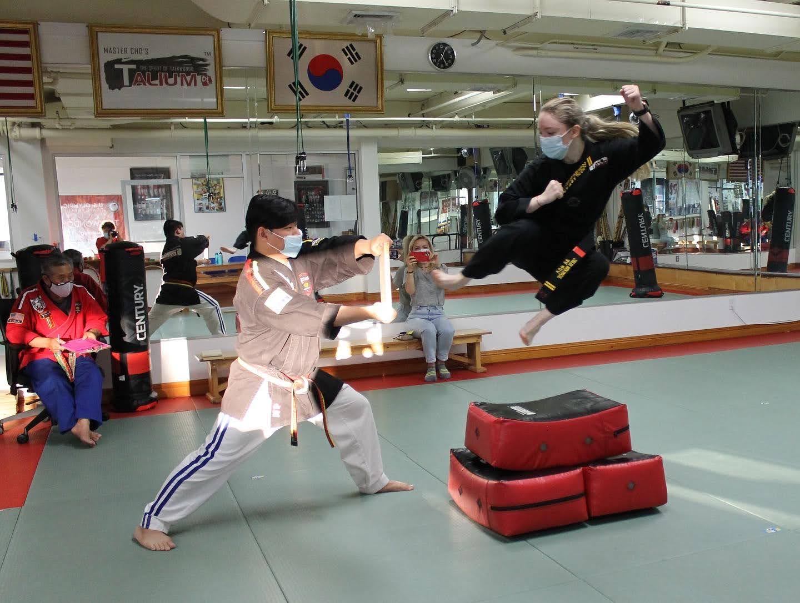
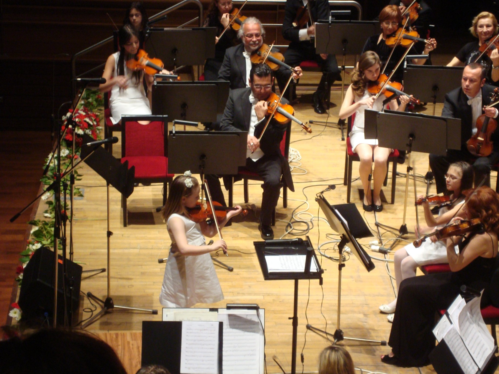
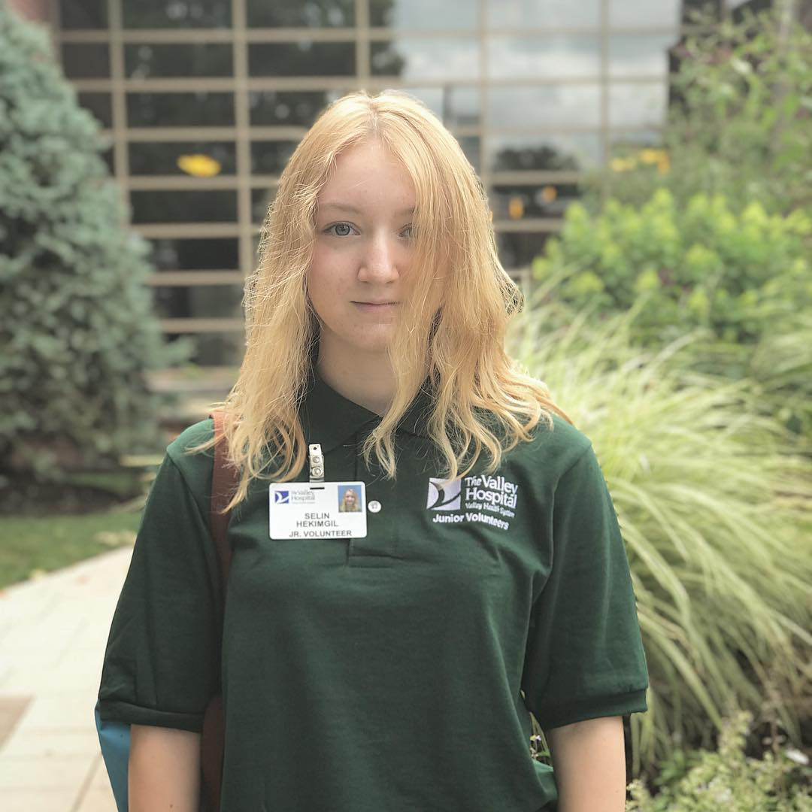
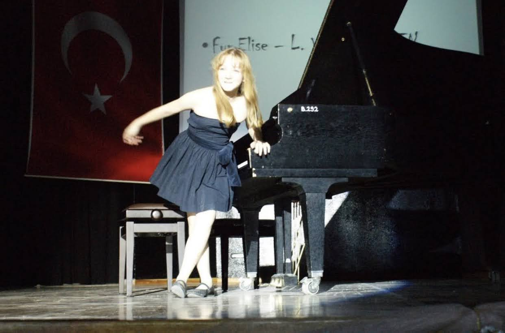
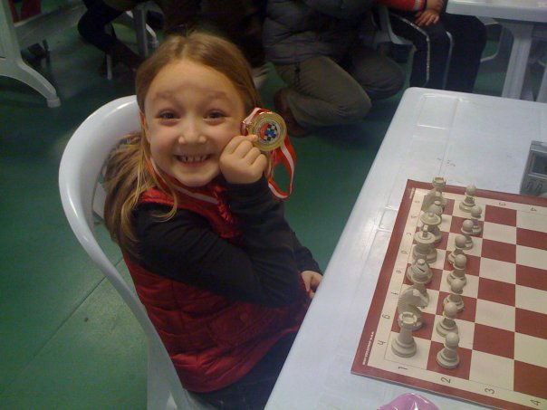
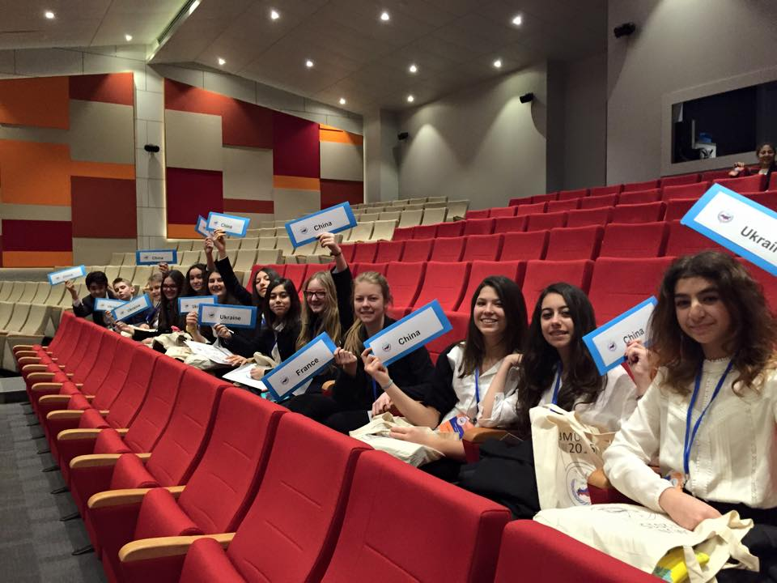

"The map of what we call reality is an ever-shifting mosaic of ideas.” - Marcelo Gleiser

Engineering Club
(2017-2020)
Modeled, assembled, and operated a floating arm trebuchet that won 1st place at the Rowan University Pumpkin Chunkin Competition (2018).
Attended build days every week, where my teammates and I came to school on a Saturday to work on constructing our trebuchet for 6-8 hours.
Spent a total of 200 hours building!
Click to view the article!

Taekwondo Black Belt
(2017-Present)
Choreographed, taught, and participated in taekwondo demos for competitions and events.
Earned 2nd place at the first collegiate taekwondo tournament I participated in, representing NYU Sport Taekwondo (2022).
Demo Team Captain (2019)
Most Valuable Team Member (2018)
Student of the Year (2017)
Click to view one of our demos!

Concertmaster
(2011)
Played violin as first chair in a joint concert with the Izmir Philharmonic Orchestra (2011).
Chosen by my elementary school to attend an Early Talent in Music program at Yasar University.
Chosen by the Izmir Philharmonic Orchestra to be the concertmaster!

Hospital Volunteer
(2017-2020)
Worked at main lobby, laboratory, pharmacy, nursing unit.
Worked with people of all ages, transported bodily fluids, sorted medicine, knit blankets.

Piano
(2008-2016)
Claimed I was going to be the next Mozart and composed a few pieces when I was 6. Perhaps very irrelevant/random information but I thought it would be funny to mention.
Playing the piano was a big part of my life, but I stopped after moving to the US because I no longer had access to a piano :(

Chess
(2008-2012)
Attended several chess tournaments (and even won a few here and there).
Named top player of the women's division. (I don't know why a chess tournament had gendered divisions.)

Junior Model United Nations (JMUN)
(2013-2016)
Went to several JMUN conferences, most of which were in Turkey but one of them was in Paris.
Part of the Disarmament Committee